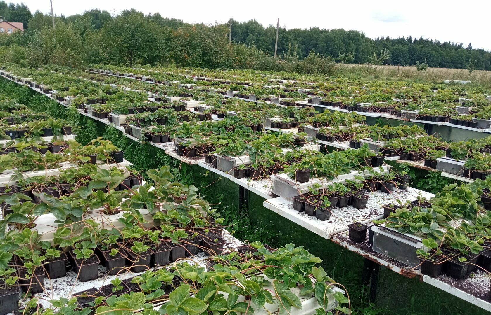

Мы выращиваем клубнику, которой сами гордимся
Питомник в Минском районе. Всё, что мы продаём, выращено у нас: от маточных кустов до готовой рассады ЗКС в стаканчиках 0,4 л.
Это наша плантация
Каждый сезон мы начинаем со своей плантации, поэтому мы знаем каждую партию рассады лично: чем она росла, чем кормилась, как зимовала.

Почему ЗКС
Рассада с закрытой корневой системой живёт в стаканчике: корни не пересыхают и не травмируются при посадке. Приживается почти вся, старт даёт быстро. Открытая корневая в пучке такого старта не даёт.
Сами выращиваем, сами тянем: полив, подкормка, отбор. В этом году вырастили рассаду в том числе из итальянской фриги, чтобы сезон не подвели.
Коробка, которую не спутаешь
Для отправки мы собираем коробку, которая доезжает: ячейки, влажные корни, фиксация. Покупатели пишут, что по коробке сразу видно: люди вложили и мозги, и руки.

Мы на рынке
Каждые выходные на рынке в Дзержинске: свежая рассада, консультации на месте, сорта с описанием. Приходите, покажем всё вживую.

«Дожинки»
Мы участвуем в республиканском фестивале-ярмарке «Дожинки» со своей ягодой и рассадой.